본문
5. 수학에서 사인과 코사인은 어디에 사용할까?
가장 근본적인 용도는 각도와 길이를 서로 연결하는 것입니다. 직각삼각형에서 시작한 길이의 비율을 좌표로 확장하면 회전을 표현할 수 있고, 회전을 시간에 따라 기록하면 반복되는 파동이 됩니다. 또한 코사인은 두 벡터 사이의 방향 차이를 측정하는 데도 사용됩니다.
5-1. 기울어진 길이를 가로 성분과 세로 성분으로 분해한다
길이 r인 선이 가로축에서 θ만큼 기울어져 있다고 합시다. 이 선은 직각삼각형의 빗변입니다. 가로 길이는 θ의 인접한 변이고, 세로 길이는 맞은편 변이므로 다음과 같이 계산합니다.
파란 화살표 하나를 빨간 점선 두 개로 나눴습니다. 가로 성분과 세로 성분은 서로 직각이며, 둘을 다시 합치면 원래 화살표가 됩니다.
예를 들어 길이가 10이고 각도가 30°라면 cos 30°≈0.866, sin 30°=0.5입니다.
전체 길이r=10은 직각삼각형의 빗변입니다.
가로 길이x=10×cos 30°≈10×0.866=8.66
세로 길이y=10×sin 30°=10×0.5=5
길이 확인√(8.66²+5²)≈10이므로 가로와 세로를 다시 합치면 원래 길이가 됩니다.
여기서 ‘성분’이란?
기울어진 길이 하나가 가로 방향으로 얼마나 기여하고 세로 방향으로 얼마나 기여하는지를 나눈 값입니다. 물리학에서는 힘과 속도를 방향별로 나눌 때, 컴퓨터 그래픽에서는 물체가 어느 방향으로 얼마나 이동했는지 계산할 때 사용합니다.
5-2. 길이의 비율을 알면 각도를 거꾸로 구할 수 있다
sin과 cos는 각도를 넣어서 비율을 얻는 함수입니다. 반대로 비율에서 각도를 찾는 함수가 arcsin과 arccos입니다. 함수 이름 앞의 arc는 여기서 역함수라는 뜻으로 사용됩니다.
예를 들어 빗변이 10, 맞은편 변이 5라면 사인 비율은 5/10=0.5입니다.
이 원리로 직접 접근하기 어려운 높이와 거리도 구할 수 있습니다. 예를 들어 관측 지점에서 건물 꼭대기까지의 거리와 올려다본 각도를 알면 건물의 높이 성분을 계산할 수 있습니다.
각도 단위 주의
수학 문제에서는 도(degree)를 자주 사용하지만, PyTorch의 torch.sin()과 torch.cos()는 라디안(radian)을 받습니다. 30°=π/6, 90°=π/2, 180°=π입니다.
5-3. 직각이 아닌 일반 삼각형의 변과 각도도 구한다
사인과 코사인은 직각삼각형의 정의에서 시작하지만, 사인법칙과 코사인법칙을 이용하면 직각이 아닌 삼각형도 계산할 수 있습니다. 각 A, B, C의 맞은편 변을 각각 a, b, c라고 하면 다음이 성립합니다.
그림을 보기 전: 인접변과 맞은편 변은 어떻게 정할까?
밑변이 항상 인접변이고 높이가 항상 맞은편 변인 것은 아닙니다. 인접변과 맞은편 변은 어느 각도를 기준으로 보느냐에 따라 이름이 바뀝니다. 먼저 기준으로 삼을 각도를 하나 선택해야 합니다.
먼저 빗변을 찾는다.
빗변은 직각의 맞은편에 있는 가장 긴 변입니다. 어느 각도를 기준으로 보더라도 빗변은 바뀌지 않습니다.
기준 각도에 붙은 변을 본다.
기준 각도에 붙어 있는 두 변 중 빗변을 제외한 변이 인접변입니다. ‘인접’은 옆에 붙어 있다는 뜻입니다.
기준 각도와 닿지 않는 변을 찾는다.
기준 각도에서 건너편에 있고 그 각도와 닿지 않는 변이 맞은편 변입니다.
아래 그림에서 각도 C를 기준으로 볼 때
빗변 = CA = b인접변 = CH = 밑변맞은편 변 = AH = 높이
같은 직각삼각형에서 각도 A를 기준으로 볼 때
빗변 = CA = b인접변 = AH = 높이맞은편 변 = CH = 밑변
현재 5-3 그림의 기준은 각도 C
따라서 밑변 CH가 인접변이고 높이 AH가 맞은편 변입니다. 그래서 cos C=CH/b, sin C=AH/b가 됩니다.

점 A에서 밑변으로 높이 AH를 내리면 일반 삼각형이 두 직각삼각형으로 나뉩니다. 왼쪽 삼각형에서 CH=b cos C, AH=b sin C를 얻고, 오른쪽 삼각형에 피타고라스를 적용합니다.
4. 코사인으로 밑변의 왼쪽 부분 CH를 구한다
왼쪽 직각삼각형 CAH에서 각도 C를 기준으로 보면 빗변은 CA=b, 인접변은 CH입니다.
cos C는 빗변 b 중 가로 방향이 차지하는 비율입니다. 여기에 실제 빗변 길이 b를 곱하면 실제 가로 길이 CH가 나옵니다.
5. 사인으로 높이 AH를 구한다
같은 직각삼각형에서 각도 C를 기준으로 맞은편 변은 높이 AH입니다.
sin C는 빗변 b 중 세로 방향이 차지하는 비율입니다. 따라서 b sin C가 실제 높이 AH가 됩니다.
6. 전체 밑변에서 CH를 빼서 HB를 구한다
전체 밑변 CB의 길이는 처음부터 알고 있는 a입니다. 전체 밑변은 왼쪽의 CH와 오른쪽의 HB로 나뉩니다.
즉 코사인으로 왼쪽 부분 CH를 알아냈기 때문에, 전체 길이 a에서 이를 빼서 남은 오른쪽 부분 HB도 알 수 있습니다.
7. 오른쪽 직각삼각형에서 피타고라스로 c를 구한다
이제 오른쪽 직각삼각형 AHB의 두 직각변을 모두 알고 있습니다.
밑변
HB = a - b cos C
높이
AH = b sin C
구하려는 변 AB=c는 이 직각삼각형의 빗변이므로 피타고라스를 적용합니다.
4→7의 전체 흐름
cos C로 CH를 구하고, sin C로 AH를 구합니다. 전체 밑변에서 CH를 빼 HB를 구한 뒤, 마지막으로 오른쪽 직각삼각형에 피타고라스를 적용해 c를 구합니다.
코사인법칙에서 C=90°라면 cos 90°=0이므로 마지막 항이 사라집니다.
즉 피타고라스 정리는 코사인법칙에서 끼인각이 90°인 특별한 경우라고 볼 수 있습니다. 측량, 지도상의 거리 계산, 삼각형의 알려지지 않은 변과 각도를 구할 때 이 법칙들을 사용합니다.